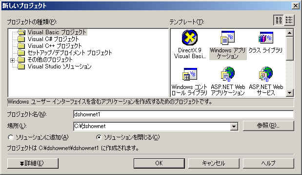
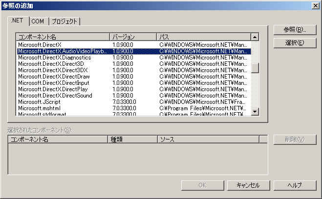
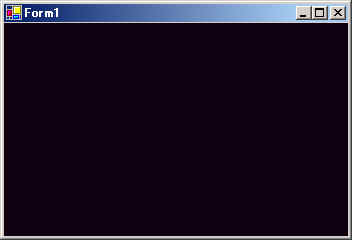

DirectShow関係２（DirectX9+VB.net)
１．動画の再生
VB.netからDirectX9で動画を再生する方法を簡単に紹介します。
（１）プロジェクトの作成
まずはVB.netのプロジェクトを作ります。
メニューから「ファイル」－「新規作成」－「プロジェクト」を選び、
VisualBasicプロジェクトを選択します。

上の図では名前は「dshownet1」としていますが、適当な名前をつけてもらってかまわないです。
右側のテンプレートでは「Windowsアプリケーション」を選択します。（別になんでもいいんだけど）
DirectX9SDKをインストールすると「DirectX9 Visual Basic Wizard」というのが増えてますが、
今回は使いません。そのうち時間があったらそっちの方もやってみようかと思います。
（２）参照の追加
プロジェクトができましたら、DirectX用の参照を追加します。
メニューの「プロジェクト」－「参照の追加」を選択します。

リストから「Microsoft.DirectX..AudioVideoPlayback」を選び、選択ボタンで追加します。
これで動画の再生に必要な部品が使えるようになります。
（３）コーディング
フォームをダブルクリックしてコードを入力します。
Public Class Form1
Inherits System.Windows.Forms.Form
#Region " Windows フォーム デザイナで生成されたコード "
略
#End Region
Private Sub Form1_Load(ByVal sender As System.Object, ByVal e As System.EventArgs) Handles MyBase.Load
End Sub
End Class
|
デフォルトで上の様なコードになっていると思いますので、
以下の文を追加します。（青色部分）
Public Class Form1
Inherits System.Windows.Forms.Form
#Region " Windows フォーム デザイナで生成されたコード "
略
#End Region
Private Const FILENAME As String = "C:\DXSDK\Samples\Media\highway.avi"
Private mMedia As Microsoft.DirectX.AudioVideoPlayback.Video
Private Sub Form1_Load(ByVal sender As System.Object, ByVal e As System.EventArgs) Handles MyBase.Load
mMedia = New Microsoft.DirectX.AudioVideoPlayback.Video(FILENAME, False)
mMedia.Owner = Me
mMedia.Play()
End Sub
End Class
|
これだけです（＾＾；
一応順に説明します。
Private Const FILENAME As String = "C:\DXSDK\Samples\Media\highway.avi" |
例によってSDKに付属するサンプル動画のファイル名を定義します。
Private mMedia As Microsoft.DirectX.AudioVideoPlayback.Video |
動画再生を行うMicrosoft.DirectX.AudioVideoPlayback.Videoクラスの変数を定義します。
mMedia = New Microsoft.DirectX.AudioVideoPlayback.Video(FILENAME, False)
mMedia.Owner = Me
mMedia.Play()
|
Form1_Load内でこのVideoクラスのインスタンスを作成し、再生開始までしています。
Videoクラスのコンストラクタは２種類ありますが、
違いは自動的に再生を開始するかどうかのスイッチの有無で
どちらもファイル名を必要になります。
Ownerプロパティは動画を再生するコンテナを指定します。
ここではMe,つまりForm1フォームをコンテナにしています。
Ownerプロパティを指定しない場合は、別ウィンドウで再生されます。
最後にPlayメソッドで動画の再生を開始しています。

このように再生はとっても簡単です。
自動的にウィンドウサイズを動画サイズに変更してくれますし、
ウィンドウサイズを変更すれば動画サイズが変わります。
至れり尽くせりですね。（楽過ぎ）